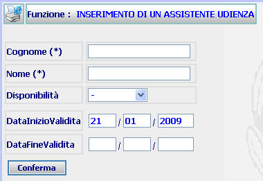
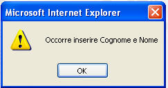

GENERALITA'
INSERIMENTO ASSISTENTE UDIENZA: La funzione, consente di inserire un nuovo Esperto nell'ufficio nel quale si opera. L'inserimento di un nuovo Esperto consiste nel definire i suoi dati identificativi ed il periodo di validità dell'utenza.
ATTENZIONE: Prima di iscrivere un Assistente è utile verificare se sia già presente nel sistema tramite la funzione di ricerca assistenti udienza
LE MASCHERE VIDEO
La funzione in esame viene realizzata attraverso l'utilizzo della seguente maschera che riporta gli elementi descrittivi e operativi dei dati dell'Assistente:

COME FARE PER ...
Per inserire un nuovo Assistente l'utente deve:
| Compilare i campi obbligatori e facoltativi presenti nella maschera |
|
Confermare i dati inseriti selezionando il bottone
|
CAMPI
I campi presenti nelle precedenti maschere sono i seguenti:
| NOME | DESCRIZIONE |
| Cognome | Compilare il campo (obbligatorio) con l'indicazione del cognome dell'assistente |
| Nome | Compilare il campo (obbligatorio) con l'indicazione del nome dell'assistente |
| Disponibilità | Campo nel quale può essere inserito attraverso l'apposita tendina lo stato di disponibilità dell'assistente (assente, presente, trasferito) |
| Data Inizio validità | Compilare il campo data nel formato gg/mm/aaaa. |
| Data Fine Validità | Compilare il campo data nel formato gg/mm/aaaa. |
PULSANTI
E' presente solo il
pulsante
 di stampa del contesto (videata)
di stampa del contesto (videata)
BOTTONI
Oltre ai comandi funzionali relativi al menù verticale sono presenti i seguenti comandi:
|
COMANDI |
DESCRIZIONE |
|
|
A fronte di tale comando, il sistema dopo aver verificato la validità dei dati specificati, termina la funzione con l'inserimento dell'assistente. |
CONTROLLI
A fronte
della pressione del bottone
 , il sistema
verifica la correttezza dei dati e visualizza un messaggio di errore nel caso che
il
formato dei campi DATA INIZIO VALIDITA' e
DATA FINE VALIDITA' non sia corretto.
, il sistema
verifica la correttezza dei dati e visualizza un messaggio di errore nel caso che
il
formato dei campi DATA INIZIO VALIDITA' e
DATA FINE VALIDITA' non sia corretto.
Inoltre verifica che siano stati compilati i campi obbligatori (Cognome e Nome), fornendo in caso contrario il seguente messaggio

S
Se il sistema non riscontrerà errori verrà visualizzata la maschera del Dettaglio assistente udienza.